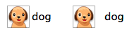

Because that would be crazy. Crazy is in the next blog post.
I’ve had to write a sizeable chunk of (fairly mediocre) Objective-C code recently, and I’ve formed the following opinions:
- It’s easier if you just get over the thing with the brackets
- Event listeners are sooper cool
- Standard Cocoa controls are great if you want them to look exactly like Apple wants them to look like
- If you disagree with the above point, you’re going to have to play subclass bingo
Subclass bingo
You’re a subclass bingo winner when you’ve made a custom class out of all of the NSControls. If this sounds ridiculous, it just means you haven’t tried hard enough.
I started playing subclass bingo at the same time I started mumbling Cocoa, which was two months ago; I relied on the internet a lot for help. Sometimes the internet let me down, as it is wont to do, and then I had to ask actual humans things that in retrospect were fairly trivial. To save you from bringing a pox on both your houses, here are three (3) custom controls that you might one day look for.
All of them live in the Chromium code zoo now. Token feeding and photography sessions are held three times a day, weather permitting.
NSButton with custom padding
By default, if you have an NSButton that has an image and a title, these will be squished right next to each other. This doesn’t always look very pretty. By default, we get the thing on the left. We want the thing on the right.

The way we’re going to fix this is by creating a custom NSButtonCell, and overriding its -drawTitle method (I actually mean -drawTitle:withFrame:inView:, but I’m going to keep dropping the other parameters to make things look less scary. You can find everything in the docs, which are quite lovely).
If you also want to give your button a left margin (I did. I wanted that), you can also override -drawImage and add some spacing in there. The only thing you need to keep in mind is that because you’re adding all this spacing to the cell, you’ll need to manually update -cellSize, so that the correct value gets returned and your title isn’t cut off.
The full implementation is here, and its use is here. The important bits are:
- (NSRect)drawTitle:(NSAttributedString*)title
withFrame:(NSRect)frame
inView:(NSView*)controlView {
// This is the text's origin, which is from the left margin of the button.
// If you add a left margin in -drawImage, you have to add it here as well.
frame.origin.x += spacing_;
return [super drawTitle:title withFrame:frame inView:controlView];
}
- (NSSize)cellSize {
NSSize buttonSize = [super cellSize];
buttonSize.width += spacing_;
return buttonSize;
}NSButton with a transparent background color
Setting a normal, opaque background on a button is easy. You can do something like [[button cell] setBackgroundColor:[NSColor blueColor]], however this only works for borderless buttons and opaque backgrounds. If we want to draw a transparent background, we have to take drawing into our own hands and override -drawRect. Custom painting? You’re well on your way to a subclass bingo! Keep in mind this isn’t the cheapest operation (it gets called literally all the time), so don’t get too ambitious in there.
The full implementation is here, but the main method is:
- (void)drawRect:(NSRect)dirtyRect {
NSColor* backgroundColor = [NSColor colorWithCalibratedWhite:0 alpha:0.1f];
[backgroundColor setFill];
// P.S. NSRectFill(...) won't work, and will ignore the alpha. I tried.
NSRectFillUsingOperation(dirtyRect, NSCompositeSourceAtop);
[super drawRect:dirtyRect];
}Bonus points to Cocoa for using the word “atop”.
Otter intermission
I bet you feel pretty pleased with how you’re doing in subclass bingo right now. Here’s a gif of an otter who probably just subclassed a slider.

NSButton that changes its background on hover
Disclaimer: in Chromium, using a raw NSTrackingArea is a pretty big don’t, because it’s leaky and leads to weird crashes. We also don’t tend to use raw pointers like the code below either, because ain’t nobody got time for segfaults. Instead, we use scoped_nsobjects, which are the badass Objective-C flavours of scoped_ptrs. Refcounting 4 lyfe <3.
The code as used in Chromium is here. I’m going to make the crazy assumption that you, dear reader, aren’t using this in Chromium, so below is a regular-world variant. I can tell you that it compiles and runs, but I am not ready at this point to make any guarantees about the irregularities in the space-time continuum it might cause. Worst case, you’ll have to release that NSTrackingArea when you’re done with it (e.g. in the button’s -dealloc).
@interface HoverBackgroundButton : NSButton
@end
@implementation HoverBackgroundButton
- (id)initWithFrame:(NSRect)frameRect {
if ((self = [super initWithFrame:frameRect])) {
[self setBordered:NO];
// Bonus code for you. NSMomentaryChangeButton means that the pressed
// style of the button is the same as the active one.
// Also, look: font change!
[self setFont:[NSFont labelFontOfSize:14]];
[self setButtonType:NSMomentaryChangeButton];
[[self cell] setBackgroundColor:[NSColor whiteColor]];
[self sizeToFit]; // <--- We need this so that [self bounds] is a thing.
// Add a tracking area so that we can show/hide the button when hovering.
NSTrackingArea* trackingArea = [[NSTrackingArea alloc]
initWithRect:[self bounds]
options:NSTrackingMouseEnteredAndExited | NSTrackingActiveAlways
owner:self userInfo:nil];
[self addTrackingArea:trackingArea];
}
return self;
}
- (void)mouseEntered:(NSEvent*)event {
// Boom.
[[self cell] setBackgroundColor:[NSColor blueColor]];
}
- (void)mouseExited:(NSEvent*)event {
[[self cell] setBackgroundColor:[NSColor whiteColor]];
}
@endThe end
You’ve made it. Congratulations! Please let me know if/when you win at subclass bingo (though it’s unclear there are any winners), and I will send you another otter gif.